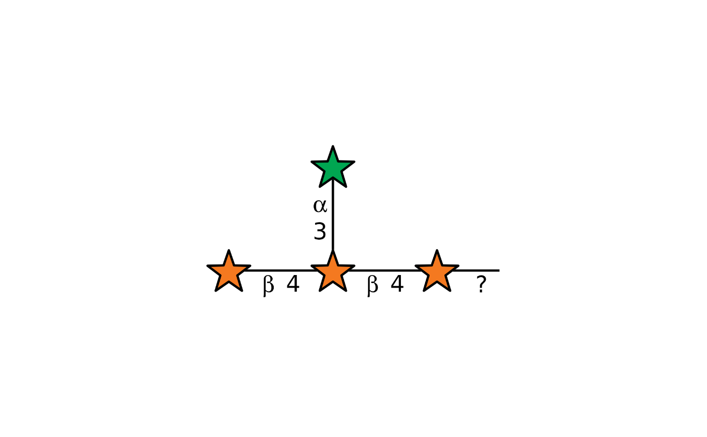
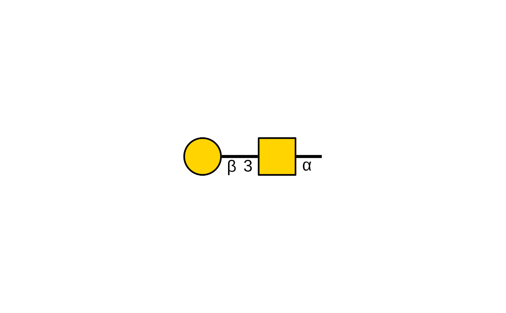

Style constructors collect the rendering options shared by glydraw's
standalone drawings, grobs, ggplot2 layers, guides, and glycan scales.
style_glydraw() provides glydraw's default appearance, while the other
constructors provide presets matching common glycan-drawing conventions.
Supply a returned style with style = to reuse its visual specification.
Usage
style_glydraw(
fuc_orient = "flex",
red_end = "",
red_end_length = 0.6,
edge_linewidth = 0.8,
node_linewidth = 0.8,
node_size = 1,
font_family = "",
colors = glydraw_colors()
)
style_glygen(
fuc_orient = "flex",
red_end = "~",
red_end_length = 1,
edge_linewidth = 0.8,
node_linewidth = 0.8,
node_size = 1,
font_family = "arial",
colors = glydraw_colors()
)
style_snfg(
fuc_orient = "up",
red_end = "",
red_end_length = 1,
edge_linewidth = 1.5,
node_linewidth = 0.8,
node_size = 1.15,
font_family = "arial",
colors = glydraw_colors()
)
style_glycoworkbench(
fuc_orient = "flex",
red_end = "~",
red_end_length = 1,
edge_linewidth = 0.8,
node_linewidth = 0.8,
node_size = 1,
font_family = "arial",
colors = c(glyWhite = "#FFFFFF", glyBlue = "#0000F0", glyGreen = "#5AC54B", glyYellow =
"#FFFF54", glyOrange = "#F7EAD7", glyPink = "#FFFFFF", glyPurple = "#B726C1",
glyLightBlue = "#EDFEFF", glyBrown = "#8F663B", glyRed = "#E53222")
)Arguments
- fuc_orient
Fuc-like triangle orientation:
"flex"or"up".- red_end
Reducing-end annotation. Use
"~"for a wave, any other string for custom text, or tag one amino-acid site as"ABC<site>D</site>EFG". Ignored whenred_end_lengthis0.- red_end_length
Length of the reducing-end line in plot coordinate units. Set to
0to omit the line and anyred_endwave or custom text while retaining the axis-aligned core anomer annotation.- edge_linewidth
Linewidth of glycosidic linkages.
- node_linewidth
Linewidth of node borders.
- node_size
Multiplier for the default node size.
- font_family
A length-one character string naming the font family used for linkage, substituent, and reducing-end text annotations. Portable choices are
"sans","serif", and"mono". Other family names, such as installed system fonts, are graphics-device dependent. The default""uses the graphics device's default font.- colors
A named character vector of SNFG colors in the format returned by
glydraw_colors(). Names must be complete and match that palette.
Functions
style_glydraw(): Use glydraw's default style.style_glygen(): Use a GlyGen-style preset.style_snfg(): Use a Symbol Nomenclature for Glycans preset.style_glycoworkbench(): Use a GlycoWorkbench-style preset.
Examples
serif_style <- style_glydraw(font_family = "serif")
draw_cartoon("Gal(b1-3)GalNAc(a1-", style = serif_style)

draw_cartoon("Gal(b1-3)GalNAc(a1-", style = style_glygen())
draw_cartoon("Gal(b1-3)GalNAc(a1-", style = style_snfg())

draw_cartoon("Gal(b1-3)GalNAc(a1-", style = style_glycoworkbench())